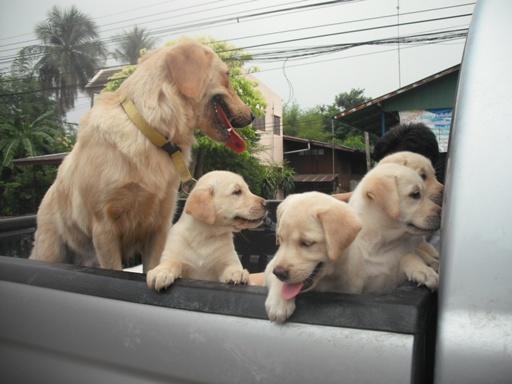

สำหรับคนรักสุนัขทั้งหลายคงไม่มีใครไม่รู้จัก โกลเด้น รีทริฟเวอร์ (Golden Retriever) ด้วยขนาดตัวที่พอเหมาะ สายตาที่อ่อนโยน เป็นมิตร ร่าเริง ขนสีทองอร่าม และหางเป็นแพคล้ายขนนกที่แกว่งไปมาตลอดเวลา บทความนี้จะพามาทำความรู้จักกับสุนัขพันธุ์โกลเด้น รีทริฟเวอร์ในทุกแง่มุม ทั้งภาพรวมของสายพันธุ์ และเคล็ดลับในการดูแลสุขภาพ และกิจกรรมที่เหมาะสม
